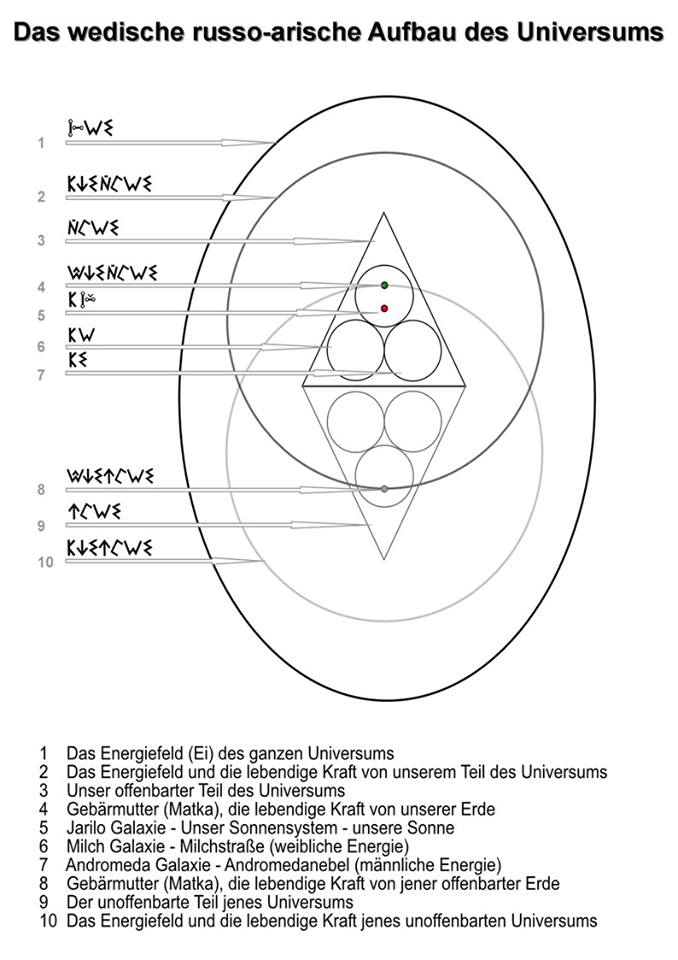
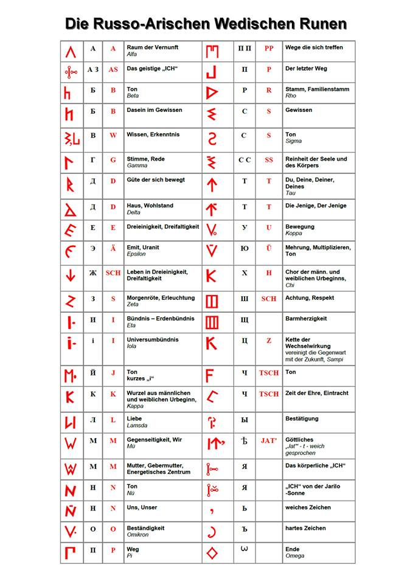
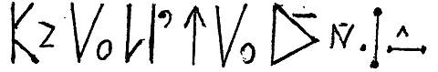
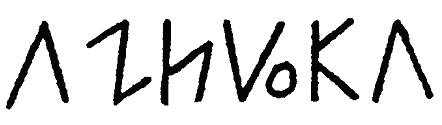

Der wedische russo-arische Aufbau des Universums und russo-arische wedische Runen - Russo Asbuka (Alphabet)
Dieser Artikel wird dem Iwantschenko Alexander Semenowitsch (13. Mai 1936 - 25. Mai 2003) – Schriftsteller, Journalist, Seemann und Forscher der Schriftsprache der alte Russi, gewidmet.
Iwantschenko war Meister des Wortes, er hat sehr interessante Verfasser-Einsichten des historisch-publizistischen Charakters im Buch «Wege des Großen Russen» erörtert (im folgenden Artikel sind die Auszüge dieses Buches verwendet), welche diese Informationen ungewöhnlich wertvoll machen. Er war wahrhaftiger Kenner des wedischen Wissens und der alten slawisch-arischen Chronik.
Viele wissen, dass in den modernen Brahma Kreisen (Brahman -Sanskrit, bráhman) Indiens und der Buddhisten Tibets die Tradition der Überlieferung des wedischen Wissens, das einen großen Umfang an Informationen aufgespart hat, mittels des mündlichen Erzählens überliefert wird. Jedoch wissen nicht alle von der Besonderheit jener "Technologie". Nicht jedes Kind ist für dieses Ziel geeignet, selbst wenn es aus der Erbfamilie der Brahmanen kommt. Geeignet sind nur die, welche als erstes auf dem Niveau des Genen Gedächtnisses von der Geburt an schon ein Teil der Informationen, in sich haben. (zum Beispiel erinnert sich einer an sein letztes Leben oder beginnt plötzlich in den heutzutage halbvergessenen oder ganz vergessenen "toten" Sprachen zu reden) Als zweites muss er über die Qualität der räumlichen Vision verfügen, die in den Ereignissen der vorchristlichen Büchern beschrieben wird (diese Kinder sehen die Zeilen des Buches, wie die auferlegten Untertitel auf bewegenden Darstellungen wie im Kino). Solche Kinder wurden nach besonderen Merkmalen in den alten Zeiten von der Hebamme schon zur Zeit des Erscheinens (Geburt) erkannt und sie teilte dies sofort den Ältesten -Hellsehenden-Weisen mit, was diese Nachricht für sie zum Feiertag machte.
Gerade solch ein einzigartiges Kind war Alexander Iwantschenko, der im wedischen Dorf Missajlowka (Gebiet Kiew) mit Hilfe einer hellsehenden Weisen Frau geboren wurde. Diese zögerte nicht und entsendete sofort eine Nachricht über das besondere Kind in eines der erhalten gebliebenen russisch -wedischen Zentren in den Bergen Pamirs. Und schon Bald ist für die Ausbildung des Jungen und der Öffnung des ihm angeboren wedischen Wissens, ein weiser Lehrer, namens Soran gekommen. Dieser graubärtige Greis, mit strahlenden blauen Augen, der das lange weiße Hemd mit dem geflochtenen Riemen auf der Brust trug und dessen Ärmel mit achtstrahligen kornblumenblauen Sternchen bestickt war, hat ihm die Geheimnisse vom Kleinen Swaroschja oder Universum (der Welt und der Antiwelt) und das Alphabet der Russi offenbart. Dieses Wissen wurde von unseren Urvätern im zweiten Jahrtausend v.u.Z. geschafft.
Unser Teil des Kleinen Swaroschja -Universums (sehe Abb.1) stellt drei Kreise dar. Unten links, der Kreis der Milchstrasse (die Milchgalaxie), rechts - der Kreis der Sury (der Andromedanebel oder Andromedagalaxie) und über und zwischen ihnen – der Kreis der Jarilo-Sonne (die Sonnengalaxie). In dem Jarilo-Kreis sind zehn Planeten: Neun bewegen sich ständig auf ihrem Weg (der Umlaufbahn) und der zehnte kann sich nicht entscheiden, läuft mal hier mal dort im Jarilo-Kreis, deswegen wird er als Wanderer (Phaeton) bezeichnet.

Abb. 1
Im Kreis der Milchgalaxie herrscht mehr die weibliche Kraft, und im Kreis der Andromedagalaxie mehr die männliche Kraft und in der Jarilo -Sonnengalaxie ist sowohl die männliche, als auch die weibliche Kraft gleich groß. Die weibliche Kraft erstreckt sich zu der männlicher Kraft. Alle drei Galaxien (Kreise), wie auch die Planeten in der Jarilo -Sonnengalaxie, haben eine Bewegung im Uhrzeigersinn von links und rechts? Sie bilden die Windungen der natürlichen Spirale.
Mit den grauen Linien ist ein weiteres (gespiegeltes) Dreieck eingezeichnet. Dieses ist jener Teil des (anderen) Kleinen Swaroschja –Universums und gleicht dem unseren. Auf der Zeichnung (Abb.1) ist es in zwei identisch, angrenzenden Dreiecken dargestellt. Aber tatsächlich, sind sie von keiner Grenzlinie geteilt. Es ist nur so gezeichnet, um anschaulich zu machen, dass zwei zusammenhängende und voneinander abhängige Dreieinheiten (Dreifaltigkeiten) innerhalb des riesenhaften himmlischen Oktaeders existieren. Auf der Abbildung sehen wir seinen flachen senkrechten Schnitt, also die Seitenansicht.
In jenem Teil des Kleinen Swaroschja –Universums gibt es auch Leben darum, wie auch um unseren Teil, sind zwei identische sich kreuzende Kreise der lebendigen Kraft, die Matka genannt werden, (russ. „маткa“ –die Gebärmutter) oder die energetischen Zentren. Diese kreuzen sich mit den Kreisen der lebendigen Kraft und den senkrechten Mittellinien (Ekvator) von der Jarilo-Sonnengalaxie und des planetarischen Kreises. Unser Universum wird, wie in einer Eierschale festgehalten, das auch „das Ei des Kleinen Swaroschja –Universums“ genannt wird. In dieser Form (Eiform) ist die „riesige Kraft vorhanden und dank dieser wird die Ordnung in der Bewegung der himmlischen Körper im ganzen Universum erhalten.
Wenn neben an das Alphabet der Russi des XVI. Jahrhunderts v. u. Z. und mindestens bis zum 7-8 Jahrhundert bestand (danach kam das griechische Alphabet oder kyrillische Alphabet), so werden wir sofort verstehen mit welcher ursprünglichen Philosophie die Schrift geschaffen war und welche als Grundbasis für die kyrillische Schrift diente, erklärt A. S. Iwantschenko.
Der weise Lehrer Soran hat Alexander erklärt, dass es im altrussischen Runen Alphabet 44 Runen (Buchstaben), einschließlich der Rune "A" – „“- „Raum der Vernunft“ (der hohe Strahl des fünfzackigen Sterns - des Zeichens des Menschen) gibt. Der Laut der Rune "A" - Raum der Vernunft ist "As" wie die Rune „“ – „das geistige ich“ Es sind fünf Punkte, zwei sind mit der senkrechten Linie verbunden (geradestehender Mensch der sich mit Hilfe von zwei Beinen bewegt) und zwei sind mit der horizontalen Linie verbunden (zwei schaffende Hände) und der fünfte Punkt symbolisiert die Vernunft. Die Vernunft verwaltet alle Handlungen des Menschen und zur gleichen Zeit existiert er für sich selbst, (jeder menschliche Gedanke ist ein einmaliges Produkt und kein geteiltes Teil der Bioenergie des Gehirns), deshalb wird der fünfte Punkt links neben gestellt. (Abb. 2)
Das kyrillische Alphabet hat die zwei ersten Buchstaben in einem "As" vereinigt und entzog ihnen die Geistigkeit und die Mehrdeutigkeit. Das Ergebnis und der Sinn dieses "As"- Der Mensch, der mit dem Rücken nach Vorne gedreht ist: dieser sieht sein Weg nicht.

Abb. 2
So blieben dann noch 43 Buchstaben übrig. Nur bei drei von ihnen, hat das kyrillische Alphabet ihre vorherige Bedeutung gelassen aber unvollständig. Die Rune (Buchstabe) „Wedi(a)“ – „“ – „Wissen, Erkenntnis“, die Rune „Gutes“ – „“ ohne seine Beweglichkeit, das heißt dass es überall die Güte (Güter) sind und die Rune „Uns, Unser“ – „“ im lautlichen Aufzeichnen ist der einzige Buchstabe, dessen Graphik das kyrillische Alphabet nicht geändert hat.
Die Rune (Buchstabe) „“ – „Dasein im Gewissen“ wurde zum sinnlosen Buchstaben in ihrem Ton. Die Rune „Jesm´“ – „“ – „Dreifaltigkeit oder Dreieinheit“ – Geist, Seele und Körper, Mutter, Vater und Kinder, Samen, Pflanze und Frucht u.s.w. in „E“ - „Jet“ verwandelt. Die „neue“ kyrillische Schrift orientierte sich am griechischen Alphabet, es wurde die Graphik entsprechend der christlichen Philosophie geändert nach dem Vorbild der Juden anstelle "der heidnischen" Bedeutungssymbolik. Es wurde die „digitale Zahlendeutung“, die 27 Buchstaben eingeführt. Man müsste detailliert und sehr umfangreich darüber schreiben, um alles zu erleutern deshalb werden wir hier nur auf fünf Buchstaben in Kürze eingehen: „Ж“, „Т“, „К“, „X“ und „Ц“ zu deutsch „Sch“, „T“, „K“, „(c)H“ und „Z“
Der altrussische Buchstabe „Ж“ „Sch“ erinnert an die Spitze des nach unten gewandten Pfeils „“ und symbolisiert das Leben – Leben in Dreieinheit, in Dreifaltigkeit von Körper, Geist und Seele. Die Graphik des Buchstabens „Т“ ist genau so, nur das die Spitze des Pfeils ist nach oben „“ gewandt ist.
Auch dieses Zeichen symbolisiert das Leben, aber „jenes, andere Leben“ (Jenseits unserer sichtbaren Welt) oder „Dreieinheit der Ahnenwelt“. Mann sollte jenes „Leben“ respektieren und mehr lieben, als dieses Leben, nur dann kann uns die Selbstsucht moralisch nicht verderben und im Allgemeinen Leben wird die Eintracht erhalten bleiben.

Abb .3
"Das heidnische" Symbol des Lebens hat die kyrillische Schrift durch den sechsstrahligen Stern – „ das Schild Davids“ - das Symbol des Judentums ersetzt (Abb.3). Somit ist die Bedeutung „Leben“ in "leben" getauscht worden. Das heißt an dieser Stelle „existieren im nicht erleuchtendem Zustand der Vernunft“, da laut dem Christentum, das Licht der Vernunft nur vom Gott stammen kann.
Und anstelle des Symbols „jenes, anderen Lebens (Jenseits unserer sichtbaren Welt) oder „Dreieinheit der Ahnenwelt“ wurde das jüdische Zeichen des Verdammt Seins „Т“ – „Tau“ eingeführt. Dieses wurde zu einem „festen, harten T“ umgewandelt und das heißt, alle die nicht christlichen Glaubens sind werden Verdammt sein (hart Bestraft).
Man könnte einwenden, dass "Tau" auch eine andere Bedeutung hat - das Zeichen der materiellen Herrschaft über die Geistige. Darauf erklärt Alexander Semönowitsch Iwantschenko, dass es bei den Masonen (Freimaurern) wirklich so ist. Seit Anbeginn stellt dar arische Symbol - der fünfzackige Stern den Mensch dar und der König Solomon machte für sich ein Siegel (Stempel) mit diesem Symbol und dieser wird auch im Ritualzubehör der Freimaurerei gefunden. Auch das Brahma Sonnenrad – Swastika (Svastika) – wurde verfälscht, die Faschisten haben es
umgedreht. Auch die Schreibrichtung rechts nach links, sie hat folgende bedeutung: nicht im Einverständnis (Eintracht) mit der Natur sein und somit ihre Zerstörung.
Der Verfasser der kyrillischen Schrift hat auch aus denselben theologischen Gründen die Grafik der drei folgenden Buchstaben, die bei den slawisch-arischen Völkern sehr wichtig und fast identisch geschrieben sind, geändert:
„K(K)“-, „X(C)H)“-, „Ц(Z)“-
Der männliche und der weibliche Uranfang – zwei gleichgroße Energien, und deshalb etwas voneinander entfern. Die Vertikale ist das sichtbahre Dasein des Geistes. Gemeinsam bilden sie „орень“ – „Wurzel“, aus der in der Gegenwart ein „ор“ – „Chor“ (der Geister) entsteht und eine Fortsetzung in der einheitlichen „епи“ – „Kette“, jene Kette die die Gegenwart mit der Zukunft vereinigt. Deshalb wird der untere rechte Strich beim Buchstaben -„Ц (Z)“ nicht an die Vertikale - der sichtbahren Gegenwart , so wie bei „K(K)“ und „X(C)H)“ angeschlossen. Dieser Strich ist ein bisschen entfern, um so in die Zukunft zu schreiten.
Und so ordnet Alexander Semönowitsch die Wörter und den Sinn nach den wedisch-slawisch-arischen Runen. Die Wörter, die für uns als klare Begriffe erscheinen, wie z.B. „Liebe“. Diese Wörter sind sehr alt und ihren echten Sinn und ihre ursprünglichen Grafiken, stellten nicht nur die einfachen Buchstabenkennzeichnungen der Laute dar, sondern ein bestimmtes System der Symbole. Jeder von diesen Runen nicht nur lautlich, sondern auch eine eigenständige Sinndeutung.
Ein Beispiel, im allgemeinen Kontext wird das Wort „Любовь“ – „Liebe“ nach dem alten slawisch-arischen „Aзбукa“(Asbuka) gelesen, folgendes Sinn erhalten:
„ЛЮБ0ВЬ“(Lübow’)-LIEBE-
„“ – „Л(L)“ - zwei Vertikale des sichtbahren Daseins, beim ersten gibt es nur ein Anfang, männlich oder weiblich – noch nicht bestimmt, die Initiative in der Liebe kann von dem Mann oder von der Frau ausgehen und deswegen ist auf der zweiten Vertikale überhaupt kein Anfang angezeichnet. Dieser wird erst dann vorhanden sein, wenn diese zwei Vertikalen in eine zusammen fliessen und „“ – "das Leben" ergeben; „“ – „Ю(Ü)“ – wurde "Bewegung" / in einem Buchstaben geschrieben; „“ – „Б(B)“ / das Dasein im Gewissen; „“ – „O(O)“ / Beständigkeit; „“ – „В“(W) /Weden, Wissen.
Der Kontext; „Die Bewegung miteinander, für das ewige Dasein im Gewissen und der Erkenntnis.“
Die erste Rune ist das Symbol der Liebe und kann als einzelne benutzt werden. Wenn nur der erste Teil der Rune dargestellt wird, dann bedeutet es – „FALSCHE LIEBE“, bitte steht’s beachten.
So sieht das Wort „Kultur“ nach dem altrussischen, vorchristlichen Alphabet (Asbuka) aus: (Abb. 4)

Abb. 4
Und so sieht das Wort „ASBUKA“ (Alphabet) nach den alten Aufzeichnen aus: (Abb.5)

Abb. 5
Bis zum Anfang des 19 Jahrhunderts sprachen unsere Vorfahren in der bildlichen Sprache wo jeder Buchstabe seine bildliche Bedeutung hatte. Später wurde das wedische Alphabet durch das einfache phonematische Alphabet (eine Sammlung von Zeichen, mit deren Hilfe die Laute aller menschlichen Sprachen beschrieben und notiert werden können. Wenn jedoch die grundlegenden Buchstaben nicht ausreichten, müssten für diese die phonematischen Buchstaben beigefügt werden, um die fehlende Buchstaben zu modifizieren. Genau das führte zum Verlust des bildlichen Denkens beim Menschen.
Die alte wedische Weisheit muss man nicht nur vom Verstand her erkennen, man muss sie ins Herz übernehmen und jedes Bildnis (Gestalt, Symbol) verinnerlichen. Aber auch nur dann, wenn die Informationen (die Ansammlung von Charakteristiken) gibt nicht das volle Wissen. Man muss es durch das Herz, die Seele, die Vernunft, den Verstand, den Geist, die Lebenserfahrung fliessen lassen und erst wenn es zur eigener Lebensweise (Lebensart) wird, dann werden die Informationen zum wedischem Wissen.
Altai. Heiligtümer des Stammes. Rodaslaw – Das Erbe der Ahnen
7520 Sommer von der Erschaffung der Welt im Sterntempel.